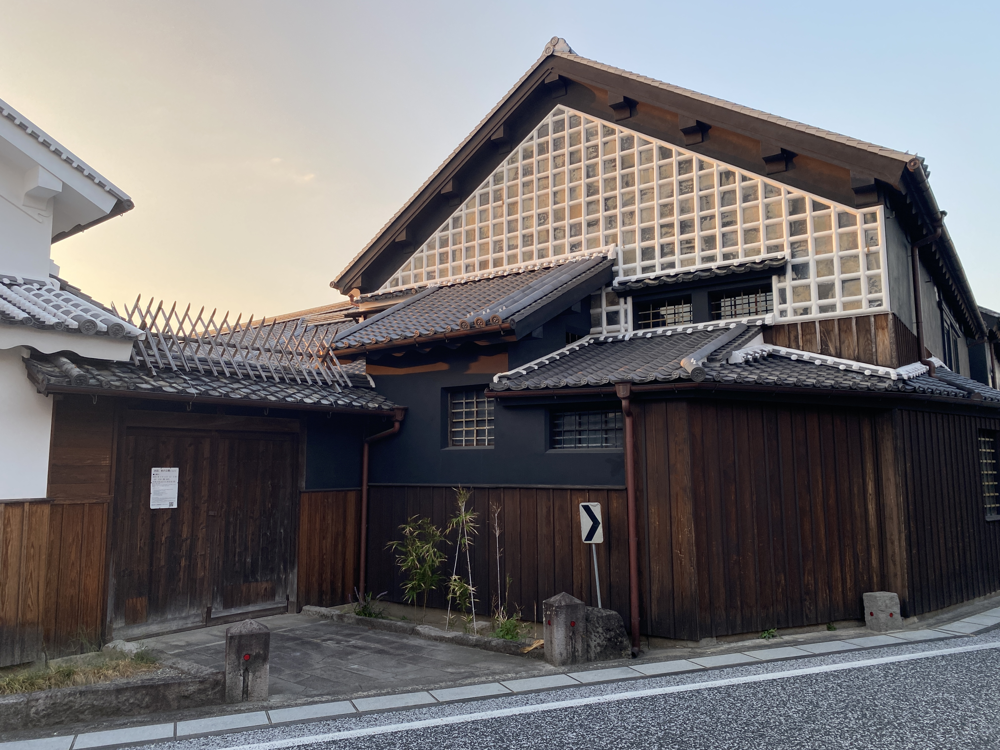
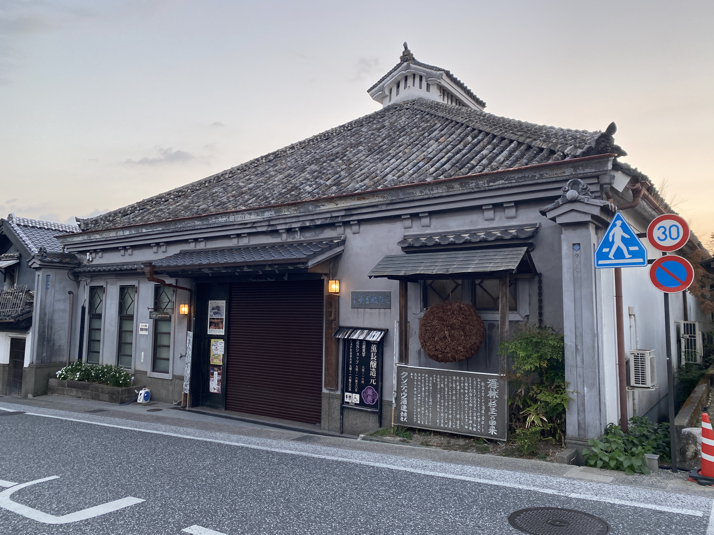
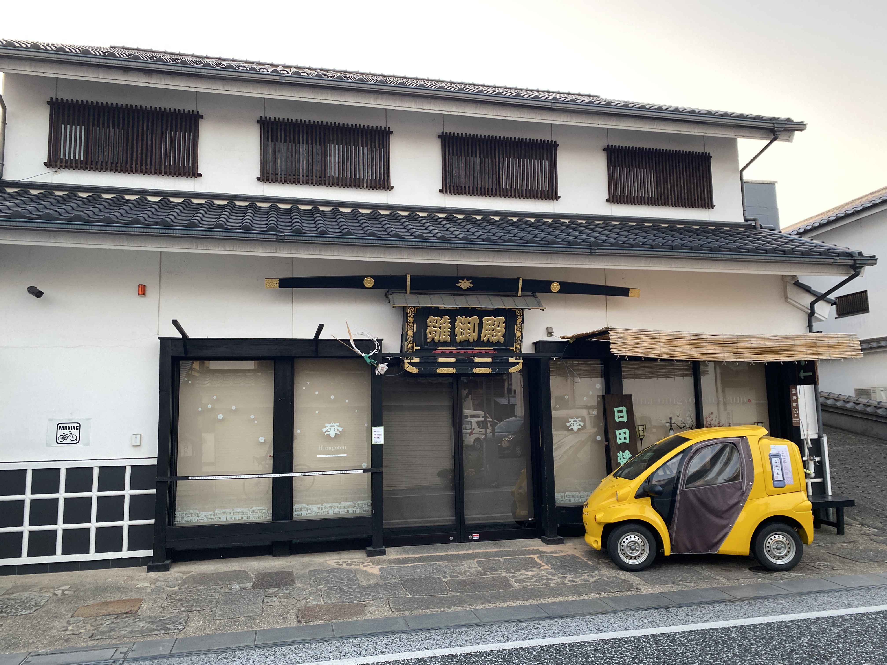
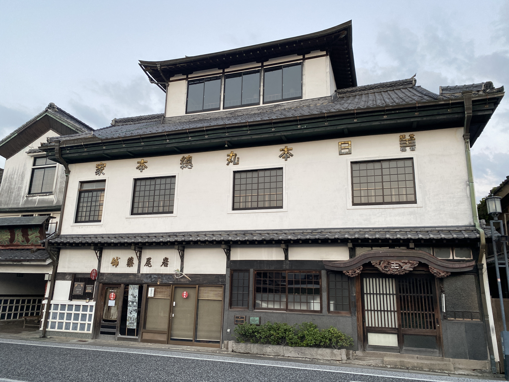
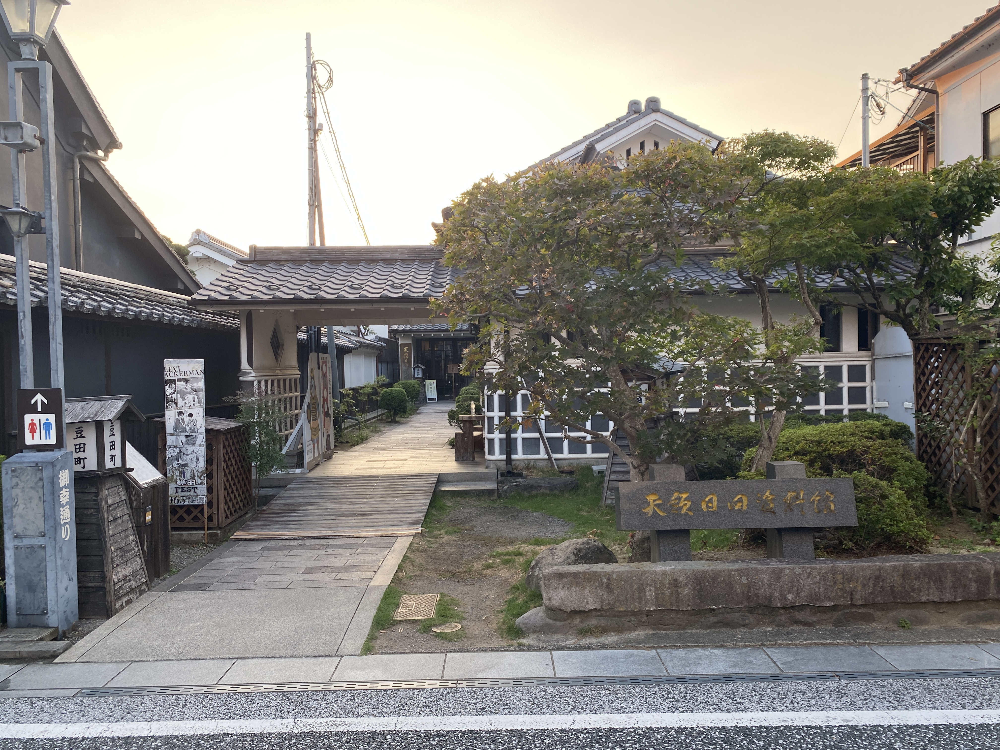

草野本家
日田を代表する歴史的な建物の一つ。 江戸時代から続く町並みの中で、 当時の暮らしや建築の雰囲気を感じられるスポットです。
豆田町には、歴史を感じる建物や資料館、酒蔵など、
さまざまな見どころがあります。
町並みを歩きながら、気になるスポットを訪れてみましょう。

日田を代表する歴史的な建物の一つ。 江戸時代から続く町並みの中で、 当時の暮らしや建築の雰囲気を感じられるスポットです。

酒造りの歴史や道具などを見学できる資料館。 豆田町の歴史ある酒蔵の雰囲気を 楽しむことができます。

雛人形を展示する施設。 豆田町の歴史や文化に触れながら、 さまざまな雛人形を楽しめるスポットです。

豆田町の歴史を感じられる建物。 薬や歴史に関する展示などを通して、 昔の暮らしや文化を知ることができます。
豆田町の歴史や町並みについて 知ることができる施設。 地域の歴史や文化に触れられるスポットです。

日田の歴史や文化を紹介する資料館。 天領として栄えた日田の歴史を 展示資料から学ぶことができます。